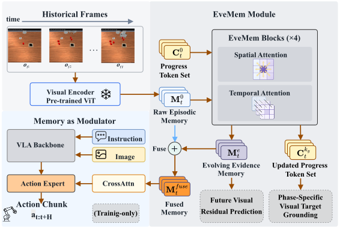
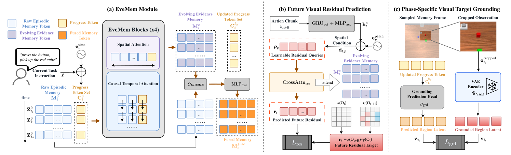

Spatial grounding
Preserves fine-grained object locations and interaction regions in each sampled frame.
Robot Learning · Embodied AI
Evolving Memory for Long-horizon Robotic Manipulation
Overview
Long-horizon robotic manipulation often depends on visual evidence that has disappeared from the current observation. EveMem turns sampled historical frames into an evolving evidence memory for VLA control.
Spatial-temporal attention models relationships within and across historical frames. Two training-only objectives further shape the memory: future visual residual prediction encourages it to retain evidence of upcoming visual changes, while phase-specific visual target grounding preserves local details associated with different task stages. At inference time, only the refined memory conditions the action expert.
Method

Preserves fine-grained object locations and interaction regions in each sampled frame.
Connects evidence across observations with causal temporal attention.
Maintains phase-aware progress tokens that summarize what has already happened.

Results
9.41 percentage points above the strongest FrameSamp baseline.
State-of-the-art aggregate performance across memory-dependent tasks.
Up from 30.00% with FrameSamp across four multi-phase tasks.
Demonstrations
Associate the demonstrated route with the later manipulation decision.
Track a target through occlusion and subsequent object swaps.
Remember earlier task evidence through a multi-stage interaction.
Real-world evaluation
EveMem is evaluated on long-horizon bimanual manipulation tasks in which relevant evidence appears early and must guide later actions.
Resources
Additional checkpoints, evaluation details, and project materials will be added here.